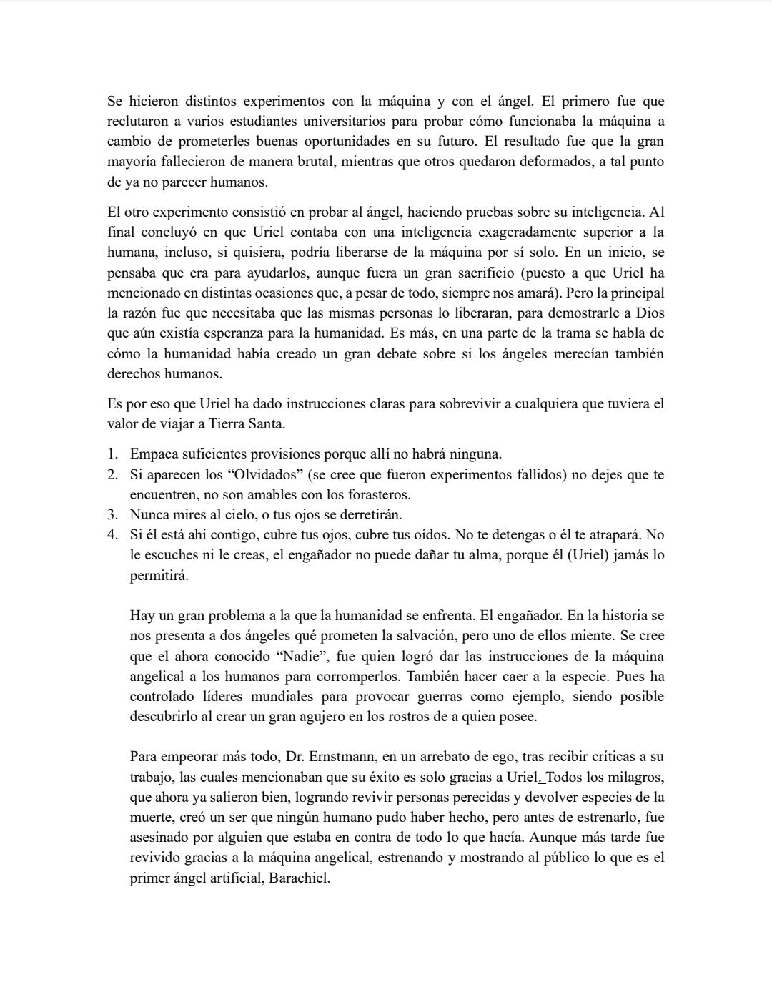

¿Quieres saber cómo capturar a un ángel divino? Aunque sea difícil de creer, es más sencillo de lo que puede parecer, lo único que se tiene que hacer es seguir los siguientes pasos.
1.- Explota los recursos del planeta, tarde o temprano no habrá qué explotar. 2.- Extermina toda la vida salvaje de la Tierra. 2.- Observa como la humanidad cae en la desesperación absoluta. 4.- Ahora estás en el borde de la extinción; reza, reza, reza… 5.- Mira cómo el mensajero divino desciende al mundo. 6.- Él quiere ayudarte. Usa su amabilidad, átalo en tu motor angelical. 7.- Extrae su energía, produce milagros con este. 8.- Devuelve al planeta su antigua ganancia de gloria, lo que tú mismo junto toda la especie le quitaron.
Ahora, lo que se necesita, es crear tu propia máquina angelical. Este mismo tiene como propósito extraer la energía del mismo ángel, para con este crear milagros, acabar problemas mundiales de una vez por todas, como también devolver en su máximo esplendor a nuestro planeta querido.
1.- Crea tu marco principal. 2.- Prepara tu ser por lo que está apunto de suceder. 2.- Sangra, sangra, sangra, sangra, sangra… 4.- Despierta el hambre de las máquinas.
Este es el terror analógico que se ha presentado por el canal Unearthly Hub. A pesar de contar una historia compleja como también larga (hasta la fecha la historia todavía no se ha acabado) ha sido considerado el gran resurgimiento del género de terror popular en Internet.
La historia sigue al científico encargado, Dr. Ernstmann de la captura del ángel llamado Uriel. Este lo tiene en una máquina angelical, que se encarga de quitarle la fuente vital del ángel para crear milagros; pero la extracción de este, por mínimo que sea, causa un gran sufrimiento de dolor a Uriel. Esta máquina se encuentra en una gran estructura llamada la Segunda Torre de Babel, construida en Tierra Santa.
Se hicieron distintos experimentos con la máquina y con el ángel. El primero fue que reclutaron a varios estudiantes universitarios para probar cómo funcionaba la máquina a cambio de prometerles buenas oportunidades en su futuro. El resultado fue que la gran mayoría fallecieron de manera brutal, mientras que otros quedaron deformados, a tal punto de ya no parecer humanos.
El otro experimento consistió en probar al ángel, haciendo pruebas sobre su inteligencia. Al final concluyó en que Uriel contaba con una inteligencia exageradamente superior a la humana, incluso, si quisiera, podría liberarse de la máquina por sí solo. En un inicio, se pensaba que era para ayudarlos, aunque fuera un gran sacrificio (puesto a que Uriel ha mencionado en distintas ocasiones que, a pesar de todo, siempre nos amará). Pero la principal la razón fue que necesitaba que las mismas personas lo liberaran, para demostrarle a Dios que aún existía esperanza para la humanidad. Es más, en una parte de la trama se habla de cómo la humanidad había creado un gran debate sobre si los ángeles merecían también derechos humanos.
Es por eso que Uriel ha dado instrucciones claras para sobrevivir a cualquiera que tuviera el valor de viajar a Tierra Santa.
1.- Empaca suficientes provisiones porque allí no habrá ninguna. 2.- Si aparecen los “Olvidados” (se cree que fueron experimentos fallidos) no dejes que te encuentren, no son amables con los forasteros. 3.- Nunca mires al cielo, o tus ojos se derretirán. 4.- Si él está ahí contigo, cubre tus ojos, cubre tus oídos. No te detengas o él te atrapará. No le escuches ni le creas, el engañador no puede dañar tu alma, porque él (Uriel) jamás lo permitirá.
Hay un gran problema a la que la humanidad se enfrenta. El engañador. En la historia se nos presenta a dos ángeles qué prometen la salvación, pero uno de ellos miente. Se cree que el ahora conocido “Nadie”, fue quien logró dar las instrucciones de la máquina angelical a los humanos para corromperlos. También hacer caer a la especie. Pues ha controlado líderes mundiales para provocar guerras como ejemplo, siendo posible descubrirlo al crear un gran agujero en los rostros de a quien posee.
Para empeorar más todo, Dr. Ernstmann, en un arrebato de ego, tras recibir críticas a su trabajo, las cuales mencionaban que su éxito es solo gracias a Uriel. Todos los milagros, que ahora ya salieron bien, logrando revivir personas perecidas y devolver especies de la muerte, creó un ser que ningún humano pudo haber hecho, pero antes de estrenarlo, fue asesinado por alguien que estaba en contra de todo lo que hacía. Aunque más tarde fue revivido gracias a la máquina angelical, estrenando y mostrando al público lo que es el primer ángel artificial, Barachiel.
Barachiel, a pesar de su cuerpo desarrollado, tenía una mente de un infante, razón por la que siempre se escapaba de la segunda torre de Babel, para jugar. Hasta que un día fue captado, maltratado de manera psicológica por los científicos, incluyendo a Dr. Ernstmann, mencionando que era un fracaso, cosa que lo corrompió e hizo que lavara la mente de los más jóvenes del mundo. Consistió en aniquilar a cualquiera que no creyera en la nueva religión impulsada por Ernstmann, la Segunda Torre de Babel y Barachiel, mientras que los creyentes a Dios u otro ser, eran aniquilados.
Más tarde se crearon robots con poderes angelicales, que causaron todavía más caos, la persona que iba a salvar a Uriel fue sobornada por Barachiel, y Uriel sigue sufriendo en la máquina angelical.
El relato que conté no lleva ni un 30% de lo que hay ahora de este terror analógico y la historia de Unerthly Hub no lleva apenas, confirmado por el creador, el 60%. Es un gran universo que es muy difícil de entender a la primera, mezclando incluso diferentes temas como el ego de la humanidad como lo cruel que puede llegar a ser.